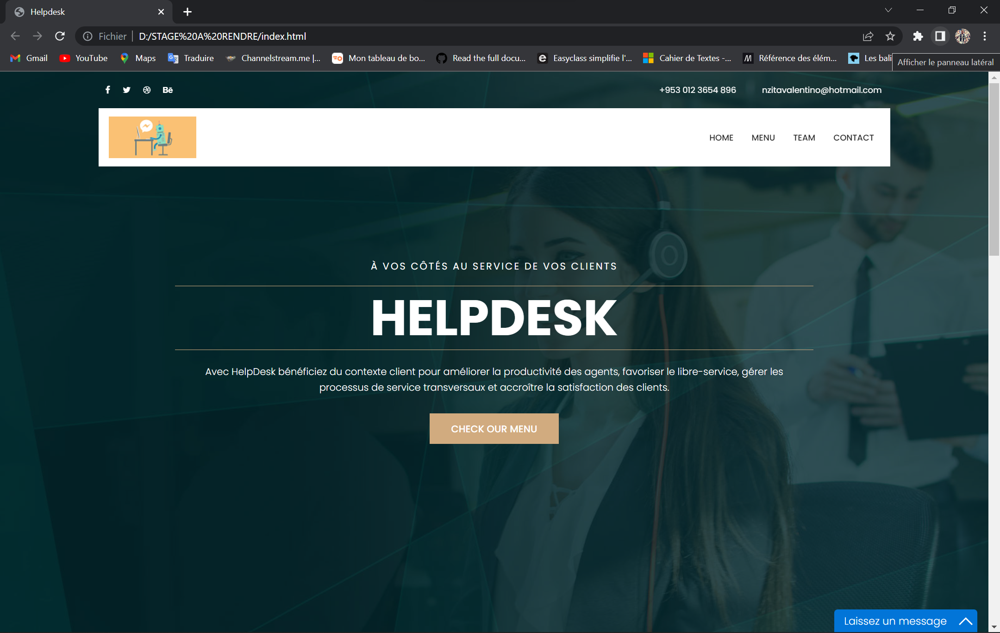
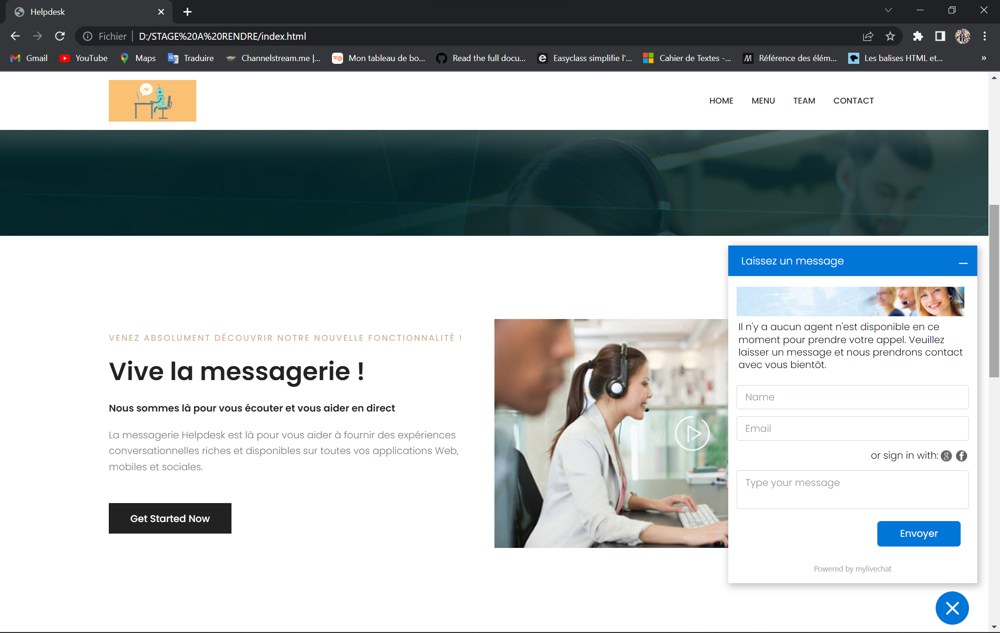
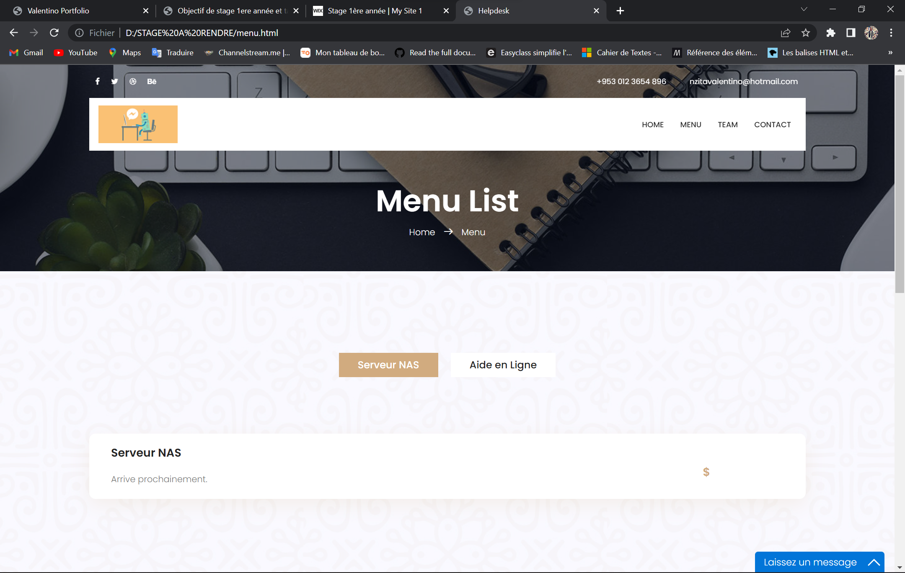
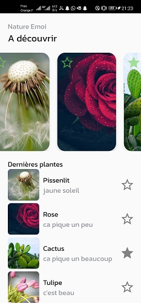
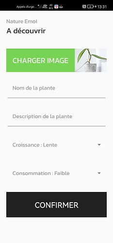

Stages
Afin de mettre en oeuvre les compétences étudiées en classe ainsi que de valider les deux années BTS, il faut effectuer 10 semaines de stage. Voici mes deux stages efféctués :
Stage de première année d'une durée de 4 semaines
J'ai éffectué nous les verrons en détails dans le rapport de stage.
Projet: Création de l'infrastructure de l'entreprise avec projet de vendre des produits et services dans le futur
Ma tâche personnelle était la création d'un site vitrine pour l’entreprise qui inclu les objets et services de vente et un chat en ligne pour répondre directement aux besoins des clients.
 Voici une page ou l'on propose nos différentes offres et services pas encore commercialisés
2eme Année:
Durant cees 6 semaines de stage j'ai essayé d'apprendre à faire une application mobile avec Android Studio en utilisant le language kotlin.
Le but de cette application est d'ajouter une plante, ecrire sa description puis sélectionner sa croissance et sa consommation.
 